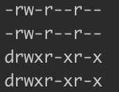
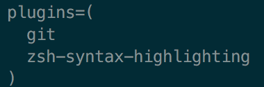

Operating System
主要是 Unix / Linux
其它 Unix 知识：Notes of MIT Missing Semester
命令
1、文件权限
修改文件权限：
chmod 命令
sudo chmod 600 ××× （只有所有者有读和写的权限）
sudo chmod 644 ××× （所有者有读和写的权限，组用户只有读的权限）
sudo chmod 700 ××× （只有所有者有读和写以及执行的权限）
sudo chmod 666 ××× （每个人都有读和写的权限）
sudo chmod 777 ××× （每个人都有读和写以及执行的权限）
文件权限的10位字符串表示
如：

- 第一位，如
[-]：首位代表是目录or文件，d为目录，-为文件； - 2-4位，如
[rwx]：拥有人的权限，r可读，w可写，x可执行； - 5-7位，如
[rw-]：同群组使用者权限； - 8-10位，如
[r–]：其他使用者权限。
数字表示：

2、表示当前目录下的所有文件
./*
3、sudo
Linux sudo命令以系统管理者的身份执行指令，也就是说，经由 sudo 所执行的指令就好像是 root 亲自执行。
使用权限：在 /etc/sudoers 中有出现的使用者
4、在终端进入root权限
su root
5、关机
sudo init 0 # 关机
sudo init 6 # 为重新启动
6、ln 命令（link 命令）
链接
- 硬链接：硬连接指通过索引节点来进行连接。在Linux的文件系统中，保存在磁盘分区中的文件不管是什么类型都给它分配一个编号，称为索引节点号(Inode Index)。在Linux中，多个文件名指向同一索引节点是存在的。一般这种连接就是硬连接。硬连接的作用是允许一个文件拥有多个有效路径名，这样用户就可以建立硬连接到重要文件，以防止“误删”的功能。其原因如上所述，因为对应该目录的索引节点有一个以上的连接。只删除一个连接并不影响索引节点本身和其它的连接，只有当最后一个连接被删除后，文件的数据块及目录的连接才会被释放。也就是说，文件真正删除的条件是与之相关的所有硬连接文件均被删除。
- 软连接：另外一种连接称之为符号连接（Symbolic Link），也叫软连接。软链接文件有类似于Windows的快捷方式。它实际上是一个特殊的文件。在符号连接中，文件实际上是一个文本文件，其中包含的有另一文件的位置信息。
使用方式
创建硬链接
一般不使用硬链接来链接文件
ln ... ...
创建软链接
ln -s [源文件或目录] [目标文件或目录]
例：
当前路径创建test 引向/var/www/test 文件夹
ln -s /var/www/test test
创建/var/test 引向/var/www/test 文件夹
ln -s /var/www/test /var/test
删除软链接
和删除普通的文件是一样的，删除都是使用rm来进行操作
例：
删除test
# 推荐使用
unlink test
# 其次用法
rm test
不推荐使用rm -rf，在使用rm -rf删除时，如果链接目标是目录时千万要小心，使用 rm -rf test/ 时你会发现，软连接并没有被删除，而源目录下的文件会被删除！
修改软链接
ln -snf [新的源文件或目录] [目标文件或目录]
这将会修改原有的链接地址为新的地址
常用参数：
- -f : 链结时先将与 dist 同档名的档案删除
- -d : 允许系统管理者硬链结自己的目录
- -i : 在删除与 dist 同档名的档案时先进行询问
- -n : 在进行软连结时，将 dist 视为一般的档案
- -s : 进行软链结(symbolic link)
- -v : 在连结之前显示其档名
- -b : 将在链结时会被覆写或删除的档案进行备份
- -S SUFFIX : 将备份的档案都加上 SUFFIX 的字尾
- -V METHOD : 指定备份的方式
- --help : 显示辅助说明
- --version : 显示版本
DOS
DOS：是磁盘操作系统（英文：Disk Operating System）的缩写，是个人计算机上的一类操作系统。
DOS 家族包括 MS-DOS、PC-DOS、DR-DOS、FreeDOS、PTS-DOS、ROM-DOS、JM-OS等，其中以 MS-DOS 最为著名。虽然这些系统常被简称为"DOS"，但没有任何一个系统单纯以"DOS"命名。
Shell
以 zsh 为例
什么是shell
『Shell / 壳层』：命令行界面的解释器，用户和系统内核的沟通桥梁。分为：①命令行界面（CLI） ；② 图形用户界面（GUI）。
图形用户界面（GUI）shell
MacOS 的 shell
『Finder / 访达』: 在 MacOS 中，能让用户管理文件、文件、磁盘、网络，以及启动其他的应用程序的引用程序。
Linux 的 shell
『X窗口管理器』: 独立的 X窗口管理器，例如 Blackbox 与 Fluxbox 。
『Desktop Environment / 桌面环境』: 桌面环境是依靠于窗口管理器的的扩展实现。如 KDE、GNOME、Xfce、DDE 。
Windows 的 shell
『Explorer / 文件资源管理器』: 此操作系统中浏览电脑中文件与文件夹结构的基本工具，win + E 快捷键呼出。
『开始菜单』: 屏幕的左下角菜单， win 键呼出。
『DOS Shell』: 1998 年发布于 MS-DOS 的文件管理器，是终端里面生成的可视化界面。
命令行界面（CLI）的 shell
MacOS / Linux 的 shell
『sh / Bourne shell』: 1977 在 Version 7 Unix 上的默认 shell。
『Bash』: 名称由来 Bourne-Again SHell，在 GNU 计划中，于 1989 发布于第一个版本，是 sh 的兼容的开源的续作。亦是 Linux 和 MacOS （含10.14之前）的默认 shell。
『Z shell / Zsh』: 是 sh + bash + 扩展功能。自2019 年起，MacOS 的默认 Shell 已从 『Bash 』改为『Zsh』。
Windows 的 shell
『命令提示符 / cmd.exe』：是 Win32 应用程序，取代『COMMAND.COM』。Windows命令提示符（cmd.exe） 是 Windows NT 下的一个用于运行 Windows 控制台程序或某些 DOS 程序的壳层程序；
『PowerShell』 : 包括 ①Windows PowerShell + ②PowerShell Core ，基于 .NET 框架开发，自 2016 年后开源且跨平台。① 为前四年的版本，仅支持 Win 平台；② 则是其演进，支持跨平台 Linux 和 Mac。
『COMMAND.COM』: 是一个16位的 DOS 应用程序。已经被 命令提示符(cmd.exe) 取代在 MS-DOS、Windows 95、Windows 98、Windows 98SE 和 Windows Me 上的默认命令行界面。
总结
『Shell』 =『图形用户界面（GUI）shell』 + 『命令行界面（CLI）的 shell』
Oh-My-zsh
1、安装 Oh-My-zsh
第一步 → 把 oh-my-zsh 项目 Clone 下来：
git clone https://github.com/robbyrussell/oh-my-zsh.git ~/.oh-my-zsh
第二步 → 复制 .zshrc
cp ~/.oh-my-zsh/templates/zshrc.zsh-template ~/.zshrc
.zshrc是 zsh 的启动文件，里面描述了要 怎样启动 zsh。如使用 oh-my-zsh 包来启动 zsh
第三步 → 更改你的默认 Shell
chsh -s /bin/zsh <uesrname>
2、安装代码高亮插件 zsh-syntax-highlighting
安装
执行命令：
cd ~/.oh-my-zsh/custom/plugins/
git clone https://github.com/zsh-users/zsh-syntax-highlighting.git
配置
打开 ~/.zshrc 文件
找到 plugins，我们需要把高亮插件加上：

注意：zsh-syntax-highlighting 必须在最后一个。
然后在文件末尾添加：
source ~/.oh-my-zsh/custom/plugins/zsh-syntax-highlighting/zsh-syntax-highlighting.zsh
# source /usr/local/share/zsh-syntax-highlighting/zsh-syntax-highlighting.zsh # 如果使用命令 brew 安装，则是添加这条命令语句
接着保存退出，然后执行下面的命令立即生效：
source ~/.zshrc
zsh 主题配置文件
sudo vim $ZSH/themes/<ThemeName>.zsh-theme
环境变量
OSX
环境变量配置文件
系统级别：
- /etc/profile：为系统的每个用户设置环境信息和启动程序，其配置对所有登录的用户都有效，一般不建议修改该文件。
- /etc/paths ：任何用户登陆时都会读取该文件，全局建议修改这个文件 。
以上是系统级别配置文件，系统启动就会加载，修改需要Root权限。
用户级别：
- ~/.bash_profile：为当前用户设置专属的环境信息和启动程序，当用户登录时该文件执行一次。默认情况下，它用于设置环境变量，并执行当前用户的 .bashrc 文件，类似于 /etc/profile，一般用户级环境变量会放到这个文件。
- ~/.bash_login
- ~/.profile
上面的文件也是依次执行的，如果bash_profile文件存在，则后面的几个文件就会被忽略不读了，如bash_profile文件不存在，才会以此类推读取后面的文件。
shell打开时加载：
- /etc/bashrc：系统级配置，为每个运行 bash shell 的用户执行该文件，当 bash shell 打开时，该文件被执行，其配置对所有使用bash的用户打开的每个bash都有效。
- ~/.bashrc：用户级配置，作用同上。 bashrc没有上述规则，它是bash shell打开的时候载入的。
配置方法
- 在.bash_profile文件中写入export PATH=$PATH:/opt/STM/STLinux-2.3/devkit/sh4/bin
- export 命令用于设置或显示环境变量，语法格式为export [变量名称]=[变量设置值]
- source .bash_profile，立即生效（source命令作用为,在当前bash环境下读取并执行file中的命令。）
常用操作
env 查看当前所有环境变量
cat /etc/shells 查看当前系统支持的shell程序
echo $SHELL 查看当前系统正在使用的shell
chsh -s /bin/bash 修改当前系统使用的Shell程序
常用环境变量
PATH 系统指定可执行文件的搜索路径。 SHELL 系统当前使用Shell程序 常见问题
如何系统默认shell使用的是zsh而不是(sh,bash),那么zsh是不加载.bash_profile文件的, 而是加载.zshrc. source .zshrc 在zsh环境下读取配置文件
包管理器
Homebrew
关闭 brew 的自动更新和自动清理
我们可以（在 .zshrc 中）添加两个环境变量：
export HOMEBREW_NO_AUTO_UPDATE=1
export HOMEBREW_NO_INSTALL_CLEANUP=1
- 其中，第一个环境变量的作用是防止Homebrew 擅自升级所有软件。第二个环境变量是防止自动清理。
Homebrew 安装/升级应用的机制
例如：
当我在 Homebrew 中升级 Python 版本时，它会把新版本的 Python 下载下来，安装到另一个文件夹里面。然后修改/usr/local/bin/python这个软连接，指向新的 Python 版本的可执行文件。但不改动老版本的 Python。这样一来，虚拟环境依然可以使用老版本的 Python，代码不受影响。
Homebrew 安装软件的安装路径
/opt/homebrew/Cellar
Homebrew 的 pin 机制
brew pin is the way to go. It will pin the formula to the current version
brew pin <formula>
brew unpin can be used to reset this
brew unpin <formula>
To view all pinned formulae
brew list --pinned
- Note:
brew upgradewill not upgrade pinned formulae.
From
Stack overflow：https://stackoverflow.com/questions/10093918/ignore-formula-on-brew-upgrade
知识点本
1、命令指向问题
一些命令指向一般分为两个过程：
（1）环境变量直接指向
（2）在 命令 的文件头部二次指向
以 pip 为例：
$ which pip
/opt/homebrew/bin/pip # 这是 pip 的环境变量。运行 pip 时，指向 /opt/homebrew/bin/pip 这个文件
$ vim /opt/homebrew/bin/pip
/opt/homebrew/bin/pip：

- 第一行命令说明运行 pip 命令，在 环境变量 指向
/opt/homebrew/bin/pip之后，/opt/homebrew/bin/pip又说明要使用 python3.12 的 pip/opt/homebrew/opt/python@3.12/bin/python3.12
2、环境变量（适用于 OSX）
- zsh 默认的环境变量在
~/.zshrc - bash 默认的环境变量在
~/.bash_profil
注意：
- 环境变量是 路径，而不是 文件。
- 如我想把 bzmake 可执行文件加入到环境变量，我只需要将 bzmake 所在的 目录 添加到环境变量（如
./zshrc中）即可
查看本机环境变量：
echo $PATH
- 注意：$PATH 中 路径 以
:分隔
5、Mac 的命令行工具和 Linux 的命令行工具有所不同
因为 Linux 使用的是 GUN 命令行工具，而 Mac 使用的很多都是 bsd 命令行工具
6、OSX设置登陆项源文件目录：
/Library/LaunchDaemons
7、OSX 14 关闭输入法下的图标提示
sudo defaults write /Library/Preferences/FeatureFlags/Domain/UIKit.plist redesigned_text_cursor -dict-add Enabled -bool NO
然后终端需要你输入密码，在终端里输入密码
最后重启电脑
8、终端中的字符颜色
终端的字符颜色是用转义序列控制的，是文本模式下的系统显示功能，和具体的语言无关。
转义序列是以 ESC 开头,即用 \033 来完成
书写格式：
- 开头部分：
\033[显示方式;前景色;背景色m - 结尾部分：
\033[0m
注：
- 由于表示三个参数不同含义的数值都是唯一的没有重复的，所以三个参数的书写先后顺序没有固定要求，系统都能识别；
- 开头部分的三个参数：显示方式，前景色，背景色是可选参数，可以只写其中的某一个；
参数
- 显示方式: 0（默认
\）、1（高亮）、22（非粗体）、4（下划线）、24（非下划线）、 5（闪烁）、25（非闪烁）、7（反显）、27（非反显） - 前景色: 30（黑色）、31（红色）、32（绿色）、 33（黄色）、34（蓝色）、35（洋 红）、36（青色）、37（白色）
- 背景色: 40（黑色）、41（红色）、42（绿色）、 43（黄色）、44（蓝色）、45（洋 红）、46（青色）、47（白色）
示例代码（以 python 为例）
print("\033[0;37;40mHello World\033[0m")
print("\033[32mHello World\033[0m")
效果：